Как читать авторский курс и нормативные материалы
Это учебные материалы, а не заключение о соответствии конкретного продукта. Организационные модели курса отделяйте от терминов стандарта: ППК в опубликованном проекте — машиночитаемый перечень, а живой реестр его версий является практикой сопровождения. Термин OSA в разных материалах имеет разный охват. Статус и обязательность нормативного документа проверяются отдельно; проект КАПО опубликован как проект первой редакции.
М14. Политики, исключения и принятие риска
Зачем этот модуль
Сканер находит сотни findings, но сам по себе не имеет права ничего блокировать или пропускать. Решение «впускаем компонент / правим / временно живём с риском» принимает не инструмент, а правило (политика) и человек (владелец риска). Модуль учит превращать политику приёмки сторонних компонентов в исполняемые пороги (CVSS, лицензии, malware), а каждое отклонение от порога — в карточку исключения со сроком пересмотра, а не в молчаливое «замьютили в сканере».
Граница модуля М14 — не про то, как найти уязвимость или лицензию (это М06 и М07), а про то, по какому правилу мы принимаем или отклоняем компонент и кто и на какой срок берёт на себя остаточный риск. Ключевое различие модуля: security gate (автоматическое правило в CI) против управленческого решения (исключение, подписанное владельцем риска).
Что внутри
- 01 Конспект — пороги политики, анатомия карточки исключения, gate vs решение.
- 02 План занятия — 90 минут: лекция, демо реестра, ПЗ.
- 03 Практическая работа — оформить исключение с expiry и завести запись в реестре.
- 04 Контрольные вопросы — пороги, процедура, кейсы.
- 05 Что проверять на проекте — чек-лист аудитора по политикам и реестру.
Карта решения

Связи модуля
- Пороги и анализ findings: М06 Уязвимости и VDR/VEX, М07 Лицензионная чистота.
- Граница VEX и принятия риска: VEX в процессе РБПО.
- Где живёт gate в конвейере: М08 Защита цепочки поставки.
- Доказательная связка с нормативкой: М13 Нормативная трассировка.
- Шаблоны: Политика приемки сторонних компонентов · Реестр исключений · Порядок принятия риска · Требования к CI security gate.
- Практика: П30. Исключения и принятие риска.
Результат на выходе
Слушатель умеет: записать политику приёмки как набор измеримых порогов; отличить случай, который должен ловить gate, от случая, требующего управленческого решения; оформить карточку исключения (автор, обоснование, компенсирующие меры, срок пересмотра) и завести её в реестр с трассируемостью до версии компонента.